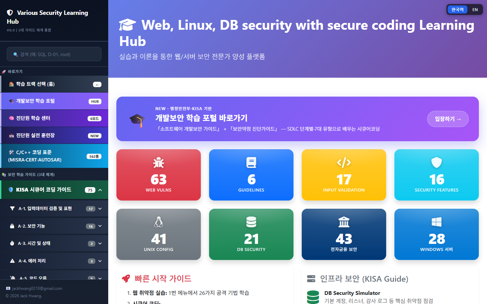
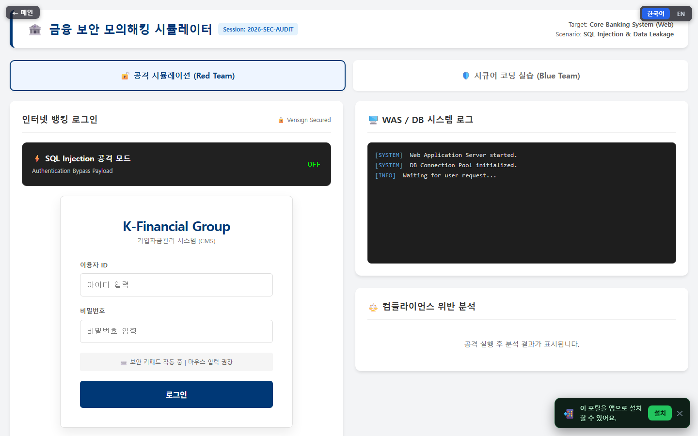
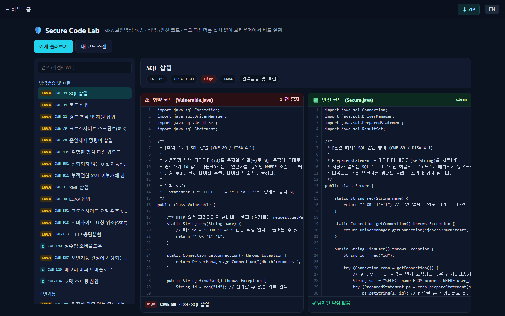
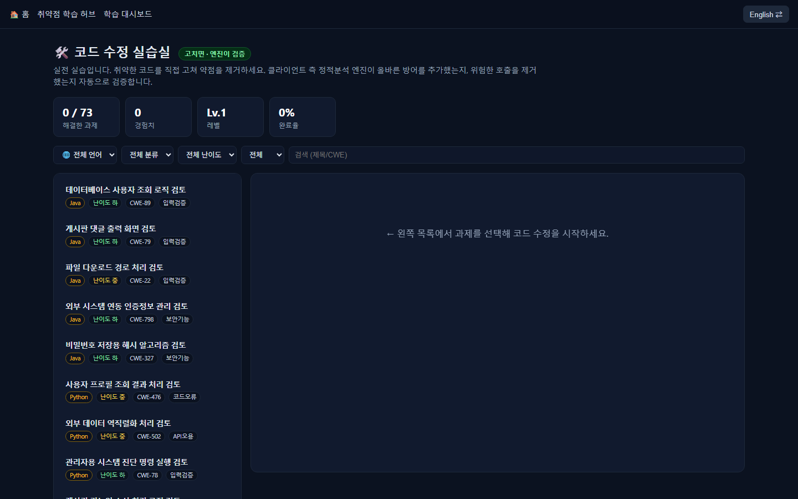
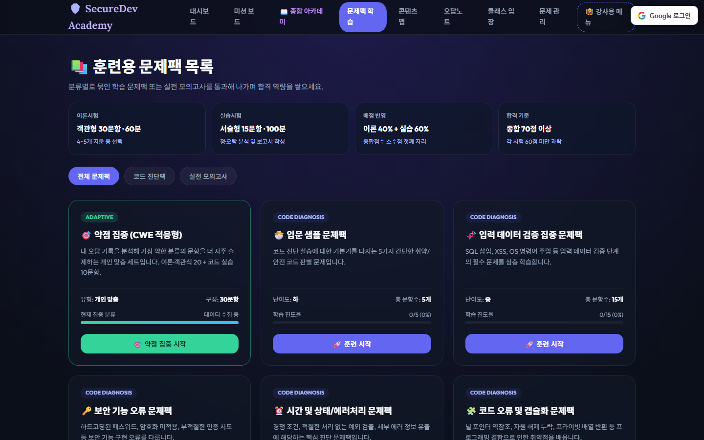
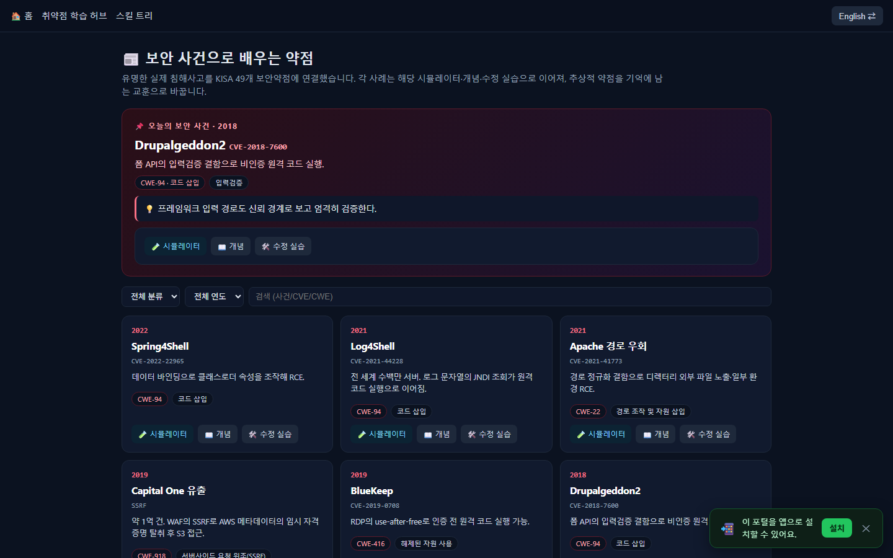

Security Education Platform · Portfolio
Secure Coding &
시큐어 코딩 & 보안약점 진단 학습 플랫폼
KISA 소프트웨어 개발보안 가이드의 49개 보안약점 을 기준으로, 웹 취약점 시뮬레이터 · 취약/안전 코드 실습 ·
정적분석(SAST) 엔진 · 적응형 문제은행 · 검증 가능한 수료증까지 아우르는 웹 기반 보안 교육 플랫폼 .
기획부터 설계 · 구현 · QA · 배포까지 1인 풀사이클 로 개발.
웹 보안 (OWASP / CWE / KISA)
정적분석 SAST
Firebase Serverless
PWA · i18n
🔗 https://vuln-sim.web.app
제작 황병주 (byungjoo hwang) · mibbeuda@gmail.com기간 2025.12 ~ 2026.07 (약 7개월, 189 commits) · 형태 개인 프로젝트 (풀스택 단독)
1
프로젝트 개요 OVERVIEW
"취약점을 체험 하고, 취약 코드를 직접 진단 하며, 안전한 코드로 고치는 것까지 한 곳에서."
🎯 해결하려는 문제
보안약점 학습이 개념·암기 위주 로 흘러 실제 코드 진단력으로 이어지지 않음
공격을 안전하게 체험 할 실습 환경이 부족
진단원 시험(KISA 49개 약점)에 맞춘 통합 훈련 도구 부재
👥 대상 사용자
SW 보안약점 진단원 지망·실무자
시큐어코딩을 학습하는 개발자
보안 교육 강사·수강생 (강의실·수료증 기능)
🧭 학습 사이클 (설계 철학)체험 → 진단 → 수정 → 검증 의 4단계 루프를 모든 콘텐츠에 일관 적용.
공격 시뮬레이션으로 원리를 체감하고, 취약 코드를 정적분석으로 짚고, 안전 코드로 고친 뒤,
도구가 "깨끗함"을 확인해줄 때까지 반복합니다.
💡 차별점
브라우저에서 실행되는 SAST — 서버 없이 실시간 코드 진단·채점정탐/오탐 0 자가검증된 룰셋(98/98)KISA 49약점 ↔ CWE ↔ 시뮬레이터 완전 매핑완전 무과금 서버리스 아키텍처로 상시 무료 운영
2
기술 스택 & 아키텍처 STACK & ARCHITECTURE
Frontend Vanilla JS (ES Modules), HTML5, CSS3, 반응형 · 다크테마
Platform Firebase Hosting (정적, 무과금 Spark)
Auth / DB Firebase Authentication, Cloud Firestore (+보안 규칙)
Static Analysis 자체 SAST 엔진(JS) · Python 버그 파인더(패턴 룰셋)
PWA Service Worker(오프라인), Web App Manifest, 설치형
Tooling Git, Firebase CLI, Node 빌드 스크립트, Python
서버리스 · 무과금 설계 — 백엔드 서버 없이 정적 호스팅 + 클라이언트 연산 + Firestore만으로 인증·동기화·리더보드·수료증 검증을 구현.
Cloud Functions를 쓰지 않아 운영비 0원 으로 상시 서비스가 가능하도록 아키텍처를 제약 조건으로 삼아 설계했습니다.
┌─────────────────────────────────────────────────────────────┐
│ Browser (Client) │
│ │
│ UI/시뮬레이터 ── 자체 SAST 엔진 ── 문제은행/시험 엔진 │
│ │ │(토큰화·테인트) │ │
│ │ │ │ │
│ Service Worker(오프라인 캐시) · PWA · i18n(KO/EN) │
│ │ │ │
└────────┼─────────────────────────────────────┼─────────────┘
│ HTTPS(정적) │ SDK(인증)
▼ ▼
Firebase Hosting Firebase Auth (Google)
(372 pages · 무과금) │
▼
Cloud Firestore + Rules
(진도동기화 · 리더보드 · 수료증검증)
🔐 보안 · 신뢰성 설계
Firestore 보안 규칙 으로 본인 문서만 쓰기, 콘텐츠는 로그인자만 읽기
수료증 불변(create-only) + SHA-256 해시로 위·변조 방지
HTTP 보안 헤더(CSP · X-Frame-Options · nosniff 등) 적용
⚙️ 엔지니어링 방식
콘텐츠 파이프라인 자동 생성·병합 (Node 빌드 스크립트)
룰셋 단일 소스(rules.json) → JS·Python 양쪽 재사용
자가검증(self-test) 으로 회귀 방지 (정탐/오탐 0 유지)
3
주요 기능 ① 실습 · 진단 HANDS-ON & ANALYSIS
🕹️ 취약점 시뮬레이터 (60종)Burp-style DAST SQL Injection · XSS · SSRF · XXE · 파일 업로드 등 웹 공격을 브라우저에서 안전하게 재현 .
실제 요청/응답 흐름과 페이로드를 조작하며 취약점의 동작 원리를 체감하도록 구성.
SQLi XSS SSRF XXE Path Traversal CSRF OS Command
🛡️ Secure Code Lab — 취약/안전 코드 49쌍KISA 49 · CWE KISA 구현단계 49개 보안약점 마다 취약 코드 ↔ 안전 코드 쌍(Java 44 · C 5)과 설명을 제공.
브라우저에서 실행되는 버그 파인더 가 취약 라인을 짚고, 안전 코드는 "탐지 없음"을 보여줌. 내 코드 붙여넣기 스캔도 지원.
Python CLI 버그 파인더 + 오프라인 실습 키트(ZIP) 동시 제공
단일 룰셋(위험 싱크 + 완화 지표) → 자가검증 98/98, 정탐·오탐 0
입력검증 17 보안기능 16 시간·상태 2 에러처리 3 코드오류 5 캡슐화 4 API오용 2
🔬 클라이언트 SAST 엔진Java·Python 토큰화 및 테인트 추적 기반 정적분석 엔진을 자체 구현.
서버 없이 브라우저에서 코드의 위험 흐름을 판정합니다.
🧩 Code-Fix Lab취약 코드를 직접 수정하면 클라이언트 SAST가 실시간 자동 채점 .
"고쳐서 통과시키기" 방식으로 조치 역량을 훈련합니다.
4
주요 기능 ② 학습 · 인증 · 경험 LEARNING & PLATFORM
📚 적응형 문제은행 & 시험객관식 319 · 이론 311 · 실전 진단 90 = 720+ 문항 과 개념 카드 49.
오답 CWE에 맞춰 문제를 재구성하는 CWE 적응형 시험 제공.
객관식 319 이론 311 실전 90
🏅 검증 가능한 수료증SHA-256 해시로 서명한 수료증을 Firestore에 등록, 별도
verify 페이지에서 제3자가 진위를 검증 . 위·변조 불가.
🤖 AI 보안 튜터사용자의 API 키(BYO-Key)로 Claude와 대화하는 소크라테스식 튜터.
키는 서버로 전송되지 않고 브라우저에만 보관.
📰 실제 침해사고 학습Log4Shell · Heartbleed 등 실제 사고를 CWE ↔ 시뮬레이터 로 연결해
"사고에서 배우는 약점"으로 재구성.
📱 PWA · 오프라인Service Worker로 오프라인 이용·설치형 앱 지원. 네트워크 없이도 학습 지속.
🌐 다국어 · 클라우드 동기화사이트 전역 한/영 토글 , 로그인 시 학습 진도를 기기 간 자동 동기화 .
🎮 실전형 학습 도구 모음게임화된 반복 학습 도구로 몰입도를 높였습니다.
PR 리뷰 게임 침해 캠페인 스킬 트리
진단 보고서 빌더 오답노트 리더보드/XP 강의실
5
제품 화면 ① 통합 허브 · 시뮬레이터 SCREENS

통합 학습 허브 — 카테고리·진행률 대시보드에서 60여 개 시뮬레이터와 학습 콘텐츠로 진입. 빠른 시작 가이드 · KISA 매핑 제공.

취약점 시뮬레이터 (금융 모의해킹) — Red Team(공격) ↔ Blue Team(시큐어코딩) 구성으로 SQL Injection 등 공격을 안전하게 재현하고 WAS/DB 로그·컴플라이언스 분석을 확인.Burp-style DAST
5
제품 화면 ② Secure Code Lab · Code-Fix Lab SCREENS

Secure Code Lab — KISA 49약점별 취약 코드 ↔ 안전 코드 를 나란히 보여주고, 브라우저에서 실행되는 버그 파인더 가 취약 라인을 "1건 탐지", 안전 코드는 "탐지 없음"으로 판정.In-browser SAST

Code-Fix Lab — 취약 코드(73과제, Java·Python)를 직접 고치면 클라이언트 정적분석 엔진이 방어 추가·위험 제거 여부를 실시간 자동 채점 . XP·레벨로 진행 관리.
5
제품 화면 ③ 문제은행 · 실제 침해사고 SCREENS

훈련용 문제팩 & 적응형 시험 — 객관식·이론·실전 진단 720+ 문항을 CWE 적응형·유형별 문제팩으로 제공. 오답 CWE에 맞춰 시험을 재구성.

실제 침해사고로 배우는 약점 — Log4Shell·Spring4Shell·Capital One 등 실제 사고를 CVE ↔ CWE ↔ 시뮬레이터 로 연결해 "사고에서 배우는 약점"으로 재구성.
6
엔지니어링 하이라이트 & 담당 역량 HIGHLIGHTS & ROLE
① 정탐·오탐 0의 자가검증 룰셋
취약/안전 코드 98개 파일에 대해 "취약은 반드시 탐지, 안전은 절대 오탐 안 함"을 자동 검증(self-test)하도록 파이프라인을 설계.
단일 룰셋(rules.json)을 JS·Python 양쪽이 공유하도록 하여 두 도구의 판정이 바이트 단위로 일치 함을 검증.
② 서버 없는 실시간 코드 진단(브라우저 SAST)
토큰화·테인트 추적 기반 정적분석을 클라이언트에서 수행. "위험 싱크 + 완화 지표" 방식으로 단순 grep 대비 오탐을 크게 낮춰,
서버 비용 없이 실시간 채점/스캔 경험을 구현.
③ 도메인 정확성 검증
NIST SP 800-57의 RSA↔ECC 키 강도 등가 등 보안 개념 오류를 리서치로 교정하고, 문항 정답을 다중 검수하여
교육 콘텐츠의 기술적 정확성 을 확보.
④ 신뢰성 · 장애 격리
클라우드 동기화가 인증 세션을 훼손하던 버그를 동기화 키 스코프 격리 로 해결. 오프라인 서비스 워커,
로그인 리다이렉트 폴백 등 실패에 견디는 클라이언트 설계를 적용.
담당 역할 (1인 풀사이클)
제품 기획 · 정보구조 설계
프론트엔드 · 정적분석 엔진 전체 구현
보안 콘텐츠(49약점·720문항) 저작 · QA
Firebase 인프라 · 보안규칙 · 배포/운영
증명된 역량
웹 보안 도메인 (OWASP · CWE · KISA 진단 기준)
정적분석(SAST) 설계 · 룰 엔지니어링서버리스 · 보안 규칙 기반 아키텍처
대규모 콘텐츠 자동화 파이프라인 · 품질검증
🔗 라이브 데모 https://vuln-sim.web.app
· 시뮬레이터는 로그인 없이 바로 체험 가능
※ 본 문서의 수치는 실제 저장소 기준(2026.07): 372 페이지 · 60 시뮬레이터 · KISA 49 약점 · 720+ 문항 · 189 커밋.
교육용 SAST/버그 파인더는 학습에 최적화된 경량 도구로, 상용 정적분석 도구를 대체하지 않습니다.